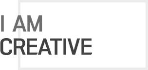

- PROFILE
-
- 이 영 재 (Lee YoungJae)
-
- 1991 / 11 / 08
-
- geni_yj@naver.com
-
- 010 - 9944 - 5755
-
- 강원대학교 영상문화학과 졸업
-
- 워드프로세서 1급 / 운전면허증
웹디자인기능사(필기합격) -
- WORK EXPERIENCE
-
- (주)강원일보 디자이너
-
- 스마트기기 웹 UI/UX 디자인 교육 이수
-
- 포토웍스, 디테일 일러스트레이터 교육 이수
-
- Concept
- 웹에 대한 기초를 다지며 처음으로 기획부터 디자인, 코딩까지 100% 스스로 제작한 작품입니다.
컨텐츠가 많은 관광청 홈페이지인 만큼 인터페이스를 최대한 깔끔하고 실용적이게 구성하였습니다.
사용자들이 조금더 쉽게 원하는 컨텐츠를 찾을 수 있도록 주메뉴도 직접 다시 설정하였으며, 제한된 페이지 안에 효율적으로 컨텐츠를 담기 위하여 탭메뉴를 이용하였습니다.
- UX & UI
- '여행을 준비하는 사람들에게 가장 필요한 정보가 무엇일까?'를 생각하며 사용자의 마음으로 구성하였습니다.
이전 홈페이지와는 다르게 일관성 있는 디자인으로 사용자로 하여금 보다 빠르게 정보를 습득할 수 있게끔 하였고 또 춘천의 대표 관광명소와 음식, 현재 춘천에서 진행 중인 행사 및 레저대회 등을 메인페이지에 전면 배치하여 중요한 정보를 놓치는 일이 없도록 하였습니다.
사파리, 크롬, 파이어폭스, 오페라, IE까지 어떤 브라우저로 방문하든 춘천문화관광 홈페이지를 이용할 수 있도록 제작하였고 W3C의 웹유효성검사도 완료하였습니다.
- Tone & Manner
- 춘천시의 관광 슬로건인 ‘로맨틱춘천’과 어울리도록 홈페이지의 메인 색상으로 핑크 계열을 사용하여 화사하고 따뜻한 느낌을 담았습니다.
- Epilogue
- '코딩'을 배우고 처음으로 제작한 사이트인만큼 애착이 남다른 사이트입니다.
춘천시 관광 브로슈어와 지도까지 구해서 읽으며 나름대로 큰 공을 들여 작업하였습니다. 서툴렀던만큼 더 많은 시간과 노력이 필요하였지만 직접 코드를 치고 오류를 잡아가며 스스로를 많이 성장시킬 수 있었습니다.
- Concept
- 사용자를 고려하여 보다 효율적인 인터페이스를 컨셉으로 잡은 사이트입니다.
사용자가 어느 환경에서 이 사이트에 접속해도 레이아웃이 무너지지 않고 완벽하게 보일 수 있도록 웹표준과 웹접근성을 근거로 하여 제작하였습니다.
기존 사이트와는 다르게 직관적이며, 사용자가 필요한 콘텐츠로 신속하게 이동 할 수 있도록 구성하였습니다.
- UX & UI
- 이 사이트를 이용하는 사람들의 마음을 생각하며 꼼꼼하게 디자인하였습니다.
기존 홈페이지의 문제점인 올드한 디자인과 플래시 이용으로 인한 오류 발생을 고려하여 웹표준과 웹접근성에 맞게 깔끔한 레이아웃과 세련된 느낌을 줄 수 있도록 디자인하였습니다.
또 IE7 등 낮은 브라우저에서도 문제 없이 원활하게 보여지도록 하기 위해서 HTML4와 CSS1,2를 사용하여 제작하였습니다.
컨텐츠를 박스 형식으로 디자인하여 사용자가 원하는 것을 바로 찾을 수 있도록 구성하였습니다.
- Tone & Manner
- 병원사이트인 만큼 사용자에게 신뢰를 주는 것이 중요하기 때문에 깔끔한 화이트 백그라운드에 포인트로 블루 계열의 컬러를 사용하여 제작하였습니다.
- Epilogue
- 기존에 병원 사이트를 이용해본 경험이 있는 유저로서 플래시 등의 사용으로 보기에는 훌륭한 것에 비해 효율성이 떨어진다는 느낌을 받은 적이 있습니다.
"어떻게하면 사용자들이 웹사이트에서 원하는 정보를 빠르게 찾을 수 있을까"를 염두해두고 이번 프로젝트를 진행한만큼 UX & UI에 대해서 많은 생각을 했고, 많은 것을 배울 수 있었습니다.
- Concept
- '라뜰리에김가'는 춘천에 위치한 베이커리 가게입니다. 기존 사이트가 아예 없어 주메뉴와 컨텐츠까지 직접 기획했습니다.
다양한 이미지를 통해 '라뜰리에김가'의 아이덴티티를 명확하게 전달하려고 노력했습니다. 또 반응형으로 작업하여 사용자가 어떠한 환경에서도 '라뜰리에김가' 사이트에 접속할 수 있도록 제작하였습니다.
- UX & UI
- PC화면은 물론 테블릿과 스마트폰화면에도 대응 할 수 있는 사이트로, 다양한 기기에서 최적화된 화면으로 접근이 가능하도록 제작하였습니다.
어느 디바이스에서 보더라도 틀어지는 현상, 글씨가 가려지는 현상이 없도록 심사숙고하여 구성하였습니다.
PC버전은 기존의 웹사이트 형식으로 제작하였으며, 모바일 버전은 디자인과 컨텐츠를 변경하여 어플리케이션 형식에 최적화 시켰습니다.
본 사이트는 판매제품에 대한 정보를 전달하는 것이 주목적이기 때문에 제품위주의 이미지와 구매욕을 자극하는 컨텐츠로 구성하였습니다.
- Tone & Manner
- 20대 여성을 홈페이지를 찾는 주타겟층으로 설정하여 아기자기하고 포근한 느낌이 들도록 디자인하였습니다.
주색상을 베이커리와 어울리는 오렌지계열로 하여 상큼하고 통통 튀는 컬러로 톤을 맞춰보았습니다.
- Epilogue
- 처음으로 반응형 사이트를 직접 기획하고 제작하면서 실력이 한계단 향상한 기분이 들었습니다. 미디어쿼리에 익숙하지 않다보니 서툰 탓에 중간중간 백그라운드가 틀어지거나 글씨가 비대하게 커져 애를 먹었지만 고생한만큼 많은 것을 배울 수 있었습니다.
- Concept
- 패션잡지인 '싱글즈' 사이트를 새롭게 디자인한 작품으로 기존 사이트의 문제점을 인식하고 제작하게 되었습니다.
다양한 주제의 이야기를 담는 패션잡지인만큼 컨텐츠가 많기 때문에 이용자들이 웹사이트 내에서 헤매지 않고 바로 주제와 관련된 기사를 찾아볼 수 있도록 구성하였습니다.
- UX & UI
- 시각적 임팩트를 주기위해 메인 이미지를 최대한 확대시켰으며 '싱글즈'가 다루고 있는 여러개의 주제들을 탭메뉴를 이용해 정리했습니다.
탭메뉴로 아티클을 정리함으로써 이용자가 큰 시선의 분산없이 정해진 컨텐츠를 선택 할 수 있으며 각 컨텐츠가 담고있는 내용을 인식 할 수 있도록 하였습니다.
사파리, 크롬, 파이어폭스, 오페라, IE까지 어떤 브라우저로 방문하든 싱글즈 홈페이지를 이용할 수 있도록 제작하였고 W3C의 웹유효성검사도 완료하였습니다.
- Tone & Manner
- 기존의 홈페이지와는 달리 대비가 강한 색상을 사용하여 눈에 띄도록 디자인하였고 전체적으로 색의 사용을 절제하여 깔끔하고 세련된 느낌을 주도록 톤을 맞춰보았습니다.
- Epilogue
- 본 사이트를 리뉴얼하며 사이트 구성에 있어서 이미지와 컬러의 중요성이 얼마나 큰 지 깨달았습니다.
사이트의 성격과 목적에 맞게 이미지와 컬러를 알맞게 사용하는 것이 사이트의 완성도에 얼마나 큰 영향을 끼치는지 경험으로 배운만큼 색상과 이미지에 대해 공부를 할 수 있는 충분한 계기가 되었던 작업이었습니다.
- Concept
- '조각'이라는 예술과 관련된 사이트인만큼 그에 걸맞는 아이덴티티를 보다 잘 표현하기 위해서 로고까지 직접 디자인하여 리뉴얼 해보았습니다. 로고 컬러를 활용하여 사이트의 전체적인 톤을 맞추었고 이러한 색의 통일으로 사용자들이 보다 쉽게 컨텐츠에 접근할 수 있도록 제작하였습니다.
더불어 그누보드를 사용하여 게시판과 갤러리를 바로 이용할 수 있도록 하였습니다.
- UX & UI
- 콘텐츠의 사용성에 유의해 적당한 margin, padding 값으로 레이아웃을 맞추고, 적절한 포인트 컬러사용으로 가독성을 높혔습니다.
'사파리', '크롬', '파이어폭스', '오페라', '인터넷 익스플로러' 까지 어느 브라우저에서 보더라도 문제가 생기지 않도록 직접 코딩하였습니다.
- Tone & Manner
- 노란색과 회색을 주색상으로 사용함으로써 한국구상조각회의 예술성과 심미성을 표현하였습니다. 전체적으로 컬러의 사용을 절제하면서 사이트의 정돈에 신경썼습니다.
- Epilogue
- 사이트를 구성하면서 여러분야의 사이트를 관찰하게 되었습니다. 이는 곧 자연스럽게 벤치마킹으로 이어졌고, 보다 나은 사이트를 구성하기 위해 생각하고 또 생각하는 스스로를 발견할 수 있었습니다.
무조건적인 아름다움을 추구하기보다 효율성과 브랜드의 정체성을 홈페이지에 담는 법을 연구할 수 있었던 뜻깊은 시간이었습니다.
- Concept
- 웹반응형에 대한 기초를 다지며 처음으로 디자인, 코딩까지 100% 스스로 제작한 작품입니다.
플랫아이콘에 대한 소개를 하는 페이지인만큼 컨텐츠에 필요한 비주얼을 플랫아이콘으로 이용하여 깔끔하고 정돈된 느낌을 담았습니다.
- UX & UI
- 화면이 줄어드는 것에 반응하여 컨텐츠들이 크기에 맞게 변화하도록 하였습니다.
모바일 버전에서는 어플리케이션 형식에 최적화시키기 위해 제이쿼리를 이용하여 메뉴를 여닫는 것으로 적용시켰습니다.
다양한 기기에 적합한 화면을 제공하는 반응형 사이트로 제작함으로써 이용자의 니즈를 충족시키려고 노력했습니다.
- Tone & Manner
- 아기자기한 느낌을 담기 위해서 깔끔한 회색 폴리곤 백그라운드 위에 파스텔 톤의 다양한 색상을 접목시켜보았습니다.
- Epilogue
- 학원을 다니기 전까지는 '웹반응형'이 뭔지도 잘 모르고 있었습니다. 미디어쿼리의 사용으로 디바이스 크기에 맞춰 변하는 것을 보니 재미있고 신기하기도 했지만
기본 웹사이트를 제작하는 것보다 훨씬 많은 시간과 노력이 필요하고 보다 더 완벽하게 웹반응형을 제작하기 위해서는 정말 사소한 것 하나하나 신경쓸 것이 많은 것 같습니다.
웹반응형을 제작하기 위해서는 제이쿼리가 정말 많이 들어가겠구나라고 어렴풋이 짐작했는데 이런 효과를 CSS만 사용하여 나타냈다는 것이 놀라웠습니다.
-
웹표준을 기반으로 한 홈페이지 메인과 모바일 페이지 시안 제작 / 네이버 블로그 디자인 및 구동
-
웹표준을 기반으로 한 html5/css3/jquery를 활용한 샘플 메인페이지 마크업 실습
-
KT&G 상상유니브 홍보리플렛, 개인 브로슈어, 포스터, 뉴스레터 등의 편집 디자인
-
포토샵, 일러스트를 활용한 아트웍 및 인포그래픽, 아이소메트릭
-
직접 촬영, 편집한 다큐멘터리 및 광고 등의 영상물